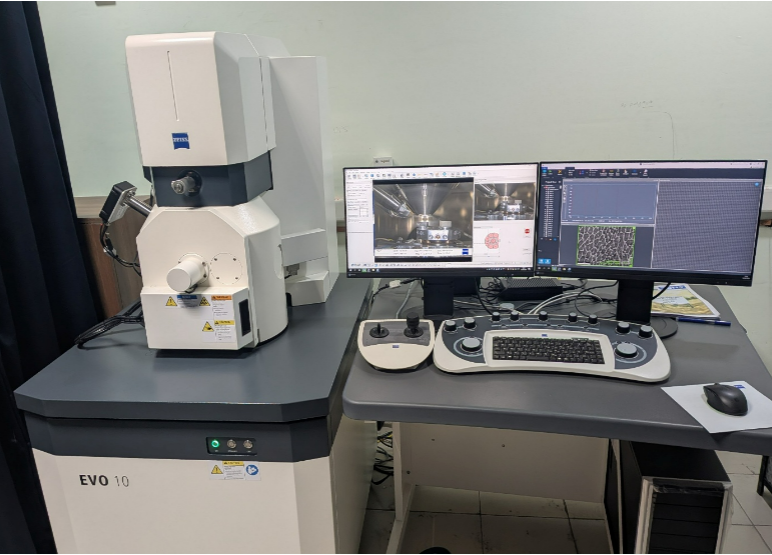

Scanning Electron Microscopy (SEM) is used for imaging solid samples like metals, ceramics, polymers, thin films, etc.
| Parameter | Description |
|---|---|
| Resolution | 2nm at 30 kV (SE with LaB6) |
| Acceleration Voltage | 0.2 to 30 kV |
| Magnification | 50x to 60000x |
| Field of View | Max 6mm diameter at the analytical working distance (AWD) of 8.5mm |
| X-ray Analysis | 8.5 mm AWD and 35° take-off angle |
| Available Detectors | SE, BSD |
This is a non-destructive analytical technique used for elemental analysis and chemical characterization of materials. It can provide 129 eV intensity peak (energy) resolution, as well as optimized detection of low energy X- rays from light elements.
Some salient features of EDX analysis of known or unknown materials:
Location of Facility:
Central Research Facility
Indian Institute of Technology Delhi
Hauz Khas, New Delhi – 110016
xxxxxxxxxxxx
Central Research Facility
IIT Delhi, Hauz Khas, New Delhi – 110016
Phone: xxxxxxxxx
Email: xxxx@iitd.ac.in
Name:xxxxxxxx
Mobile number: xxxxxxxxxx
Email Address: xxxxxxxx@iitd.ac.in